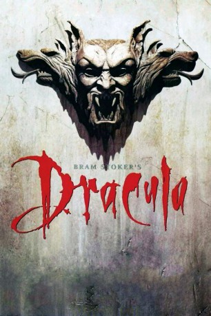

#7194 Bram Stokers Dracula
Alternativ: Bram Stoker's Dracula (Englischer Titel)
Auszeichnungen: 3 Oscars gewonnen für 1 Oscars nominiert
 
 IMDB-Wertung: 7.5 / 10
IMDB-Wertung: 7.5 / 10  Metascore: 0
Metascore: 0 
In den Wirren des Krieges mit den Türken verliert der rumänische Prinz Vlad Dracula seine Geliebte und verschwört sich mit den Mächten des Bösen. 400 Jahre später entdeckt der Untote beim Besuch seines Maklers Jonathan Harker ein Bild von dessen Verlobter Mina, das dem seiner Geliebten gleicht. Dracula setzt über nach London, um diese Lucy für sich zu gewinnen. Obwohl ihm die Vampirjäger unter der Führung von Professor Van Helsing auf den Fersen sind, ver- und entführt der Graf die Schöne.
Jahr: 1992
Dauer: 127 Minuten
FSK: 16
Land: USA Studio: Columbia PicturesTonspuren:
Untertitel: Deutsch,
Auflösung: 1080p (1920x1040) Größe: 8970 MB
Genre: Horror
Regisseur:  Francis Ford Coppola
Francis Ford Coppola
Drehbuch: Bram Stoker
Soundtrack:
Darsteller:
 Gary Oldman als Dracula
Gary Oldman als Dracula Winona Ryder als Mina Murray / Elisabeta
Winona Ryder als Mina Murray / Elisabeta Anthony Hopkins als Professor Abraham Van Helsing
Anthony Hopkins als Professor Abraham Van Helsing Keanu Reeves als Jonathan Harker
Keanu Reeves als Jonathan Harker Richard E. Grant als Dr. Jack Seward
Richard E. Grant als Dr. Jack Seward Cary Elwes als Lord Arthur Holmwood
Cary Elwes als Lord Arthur Holmwood Billy Campbell als Quincey P. Morris
Billy Campbell als Quincey P. Morris- Sadie Frost als Lucy Westenra
 Tom Waits als R.M. Renfield
Tom Waits als R.M. Renfield Monica Bellucci als Dracula's Bride
Monica Bellucci als Dracula's Bride- Nancy Linehan Charles als Older Woman
- Tatiana von Furstenberg als Younger Woman
 Jules Sylvester als Zookeeper
Jules Sylvester als Zookeeper- Honey Lauren als Peep Show Girl
- Cully Fredricksen als Van Helsing's Assistant
- Mark Borkowski als Van Helsing's Student , uncredited
- Jeffery Thomas Johnson als Van Helsing's Student , uncredited
 Michael Laren als Priest , uncredited
Michael Laren als Priest , uncredited- Moreen Littrell als Impaled Dancer , uncredited
- Joe Murkijanian als Monk , uncredited
- Adamo Palladino als Dock Loader , uncredited
- Heidi Schooler als Young Courtesan , uncredited
- Damon Stout als Londoner , uncredited
- Michaela Bercu als Dracula's Bride
- Florina Kendrick als Dracula's Bride
- Jay Robinson als Mr. Hawkins
- I.M. Hobson als Hobbs
- Laurie Franks als Lucy's Maid
- Maud Winchester als Downstairs Maid
- Octavian Cadia als Deacon
- Robert Getz als Priest
- Dagmar Stanec als Sister Agatha
- Eniko Öss als Sister Sylva
- Hubert Wells als Zookeeper
- Daniel Newman als News Hawker
- Judi Diamond als Peep Show Girl
- Robert Buckingham als Husband
- Alain Blazevic als Van Helsing's Student , uncredited
- Tina Cote als Extra , uncredited
- Christina Fulton als Vampire Girl , uncredited
- John F. Kearney als Waiter , uncredited
- Paul Klar als Soldier , uncredited
- Philip Pucci als Lorryman , uncredited
- John Michael Quinn als Apothacary , uncredited
Datei: X:\1992\Bram Stokers Dracula (1992, FSK16, 1920x1040).mkv seit 09.10.2017
Festplatte: HD 1992-1995
 Es gibt insgesamt 57 Filme in der Gruppe '1992'
Es gibt insgesamt 57 Filme in der Gruppe '1992'